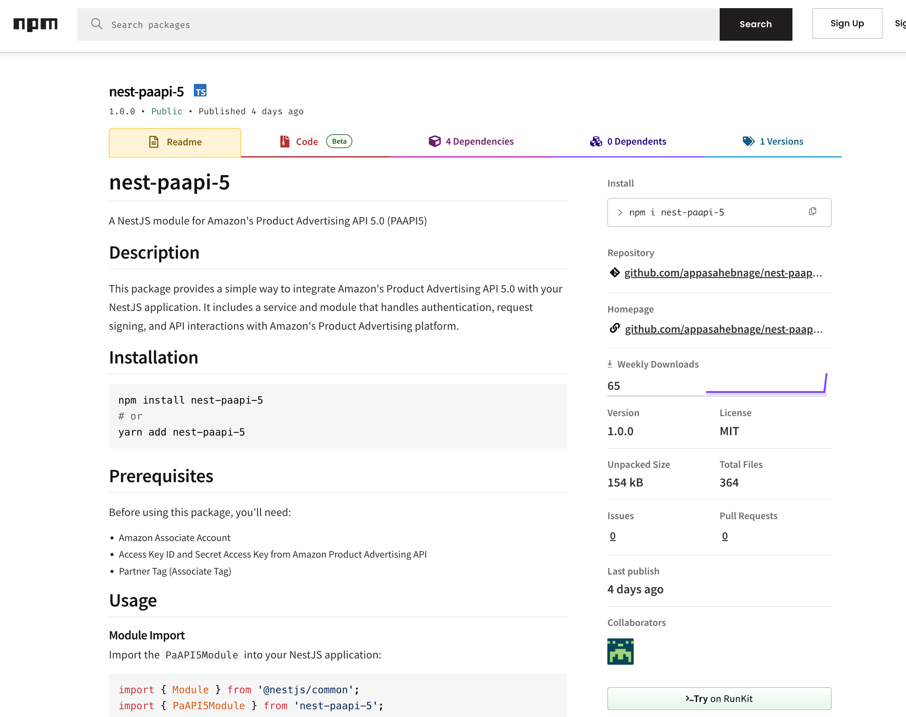

<section class="bg-white rounded-lg shadow p-6 sm:p-8 dark:bg-gray-800 antialiased mt-6">
    <div class="max-w-3xl mx-auto text-center">
        <h2 class="text-2xl font-semibold text-gray-800 dark:text-white sm:text-3xl">
            Projects
        </h2>
    </div>

    <div>
        @for (project of projects; track $index) {
            <a href="{{project.demoUrl}}" class="flex flex-col items-center bg-white border border-gray-200 rounded-lg shadow md:flex-row  hover:bg-gray-100 dark:border-gray-700 dark:bg-gray-800 dark:hover:bg-gray-700 mt-4">
                
                <div class="flex flex-col justify-between p-4 leading-normal">
                    <h5 class="mb-2 text-2xl font-bold tracking-tight text-gray-900 dark:text-white">{{ project.name }}</h5>
                    <p class="mb-3 font-normal text-gray-700 dark:text-gray-400">{{ project.description }}</p>
                </div>
            </a>
        <!-- <div class="mb-6">
            <div class="mb-4">
                <h3 class="text-lg font-semibold text-gray-800">{{ project.name }}</h3>
                <p class="text-sm text-gray-600 italic mb-2">{{ project.description }}</p>
                <div class="flex items-center space-x-4">
                    @if (project.demoUrl) {
                    <a href="{{ project.demoUrl }}" target="_blank"
                        class="text-blue-500 underline hover:text-blue-700 text-sm">
                        Live Demo
                    </a>
                    }
                    @if (project.repoUrl) {
                    <a href="{{ project.repoUrl }}" target="_blank"
                        class="text-blue-500 underline hover:text-blue-700 text-sm">
                        GitHub Repository
                    </a>
                    }
                </div>
            </div>
            <div class="flex flex-wrap gap-2">
                @for (tech of project.techStack; track $index) {
                <span
                    class="bg-gray-200 text-gray-800 text-xs px-3 py-1 rounded-full shadow-sm">
                    {{ tech }}
                </span>
                }
            </div>
            <hr class="border-t border-gray-300 mt-4" />
        </div> -->
        }
    </div>
</section>
